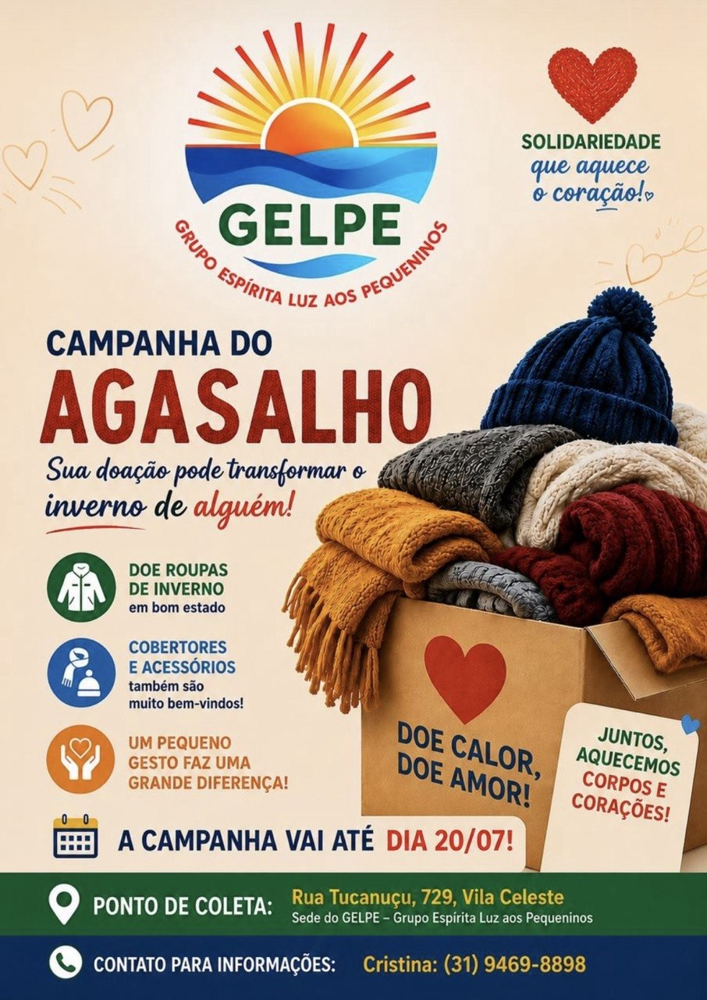
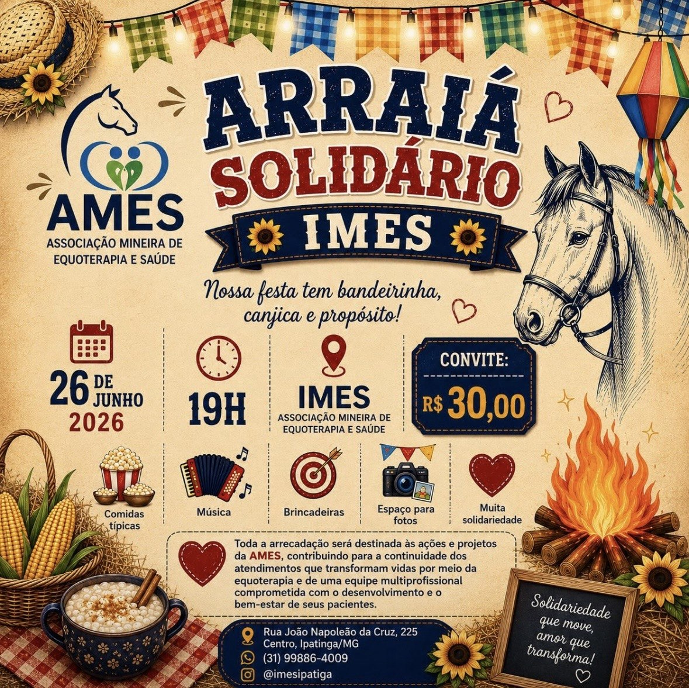
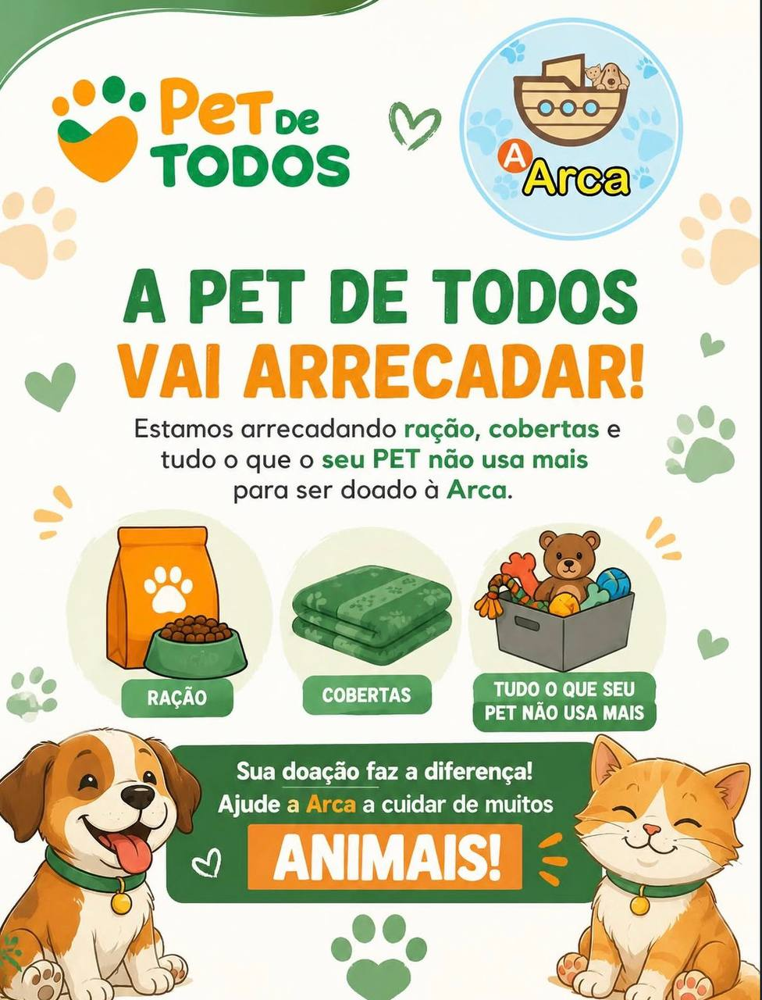

Solidariedade, inclusão e sustentabilidade
Conectando pessoas para transformar vidas.
Encontre campanhas, pontos de coleta e formas simples de contribuir com quem precisa.
Sobre o projeto
Uma ponte entre quem quer ajudar e quem precisa de apoio.
O Solidariza reúne doadores, beneficiários, voluntários e organizações sociais em um ambiente simples, acessível e comunitário. A plataforma divulga campanhas, ações sociais, eventos e pontos de coleta para reciclagem.

Ações validadas
Campanhas publicadas com responsabilidade.
As campanhas exibidas são previamente conferidas por administradores. O site atua como intermediador e o contato oficial é feito pelo e-mail institucional.
Campanhas e ações
Escolha uma frente para apoiar.

Inverno
Campanha do Agasalho
Arrecadação de roupas, cobertores e itens de inverno para famílias vulneráveis.

Evento
Arraiá Solidário
Evento beneficente com arrecadação de doações e apoio a ações sociais da comunidade.

Animais
Pet de Todos
Mobilização para arrecadar ração, acessórios e apoio a animais em situação de cuidado.

Roupas e móveis
Casa com Cuidado
Recebimento de roupas limpas, cobertores, móveis e utensílios em bom estado.
Voluntariado
Frente de Apoio
Inscrição de voluntários para ações presenciais, eventos solidários e atendimento.

Serviços
Tempo que Transforma
Apoio de voluntários em oficinas, feiras sociais, triagem e atendimento.
Deslize para o lado ou use as setas para navegar entre as campanhas ativas.
Como ajudar
Participe de um jeito simples.
Conheça as campanhas
Veja as necessidades atuais e escolha a forma de contribuição.
Preencha o cadastro
Use o formulário oficial para registrar seu interesse com consentimento.
Aguarde o contato
A equipe retorna pelo e-mail institucional para combinar os próximos passos.
Pontos de coleta
Separe, entregue e ajude o ciclo continuar.
Consulte pontos informativos para reciclagem e doações. As informações devem ser revisadas periodicamente pela equipe administradora.
GELP
Roupas, alimentos e brinquedos
Segunda a sexta, 7h às 17hEcoponto
Papel, plástico, metal e vidro
Segunda a sexta, 8h às 18hAcademia B7
Papel, plástico, metal e vidro
Segunda a sexta, 6h às 21hSustentabilidade
Antes de doar, cuide da qualidade do que será entregue.
- Doe roupas limpas e em bom estado.
- Confira a validade de alimentos antes da entrega.
- Separe recicláveis limpos por tipo de material.
- Evite enviar itens quebrados ou sem possibilidade de uso.
Seja um voluntário ou doador
Comece pelo cadastro oficial.
O cadastro é realizado exclusivamente pelo Google Forms. Para proteger seus dados, confirme seu consentimento antes de seguir para o formulário oficial.
Perguntas frequentes
Dúvidas comuns.
O Solidariza realiza pagamentos ou transações financeiras?
Não. O site não processa pagamentos e não realiza transações financeiras.
Como os dados do cadastro serão usados?
Os dados serão usados apenas para fins sociais e contato relacionado às ações.
Quem valida as campanhas exibidas?
As campanhas devem ser previamente validadas pelos administradores do projeto.
O site cuida da logística das doações?
Não. O site atua como intermediador entre interessados e iniciativas sociais.